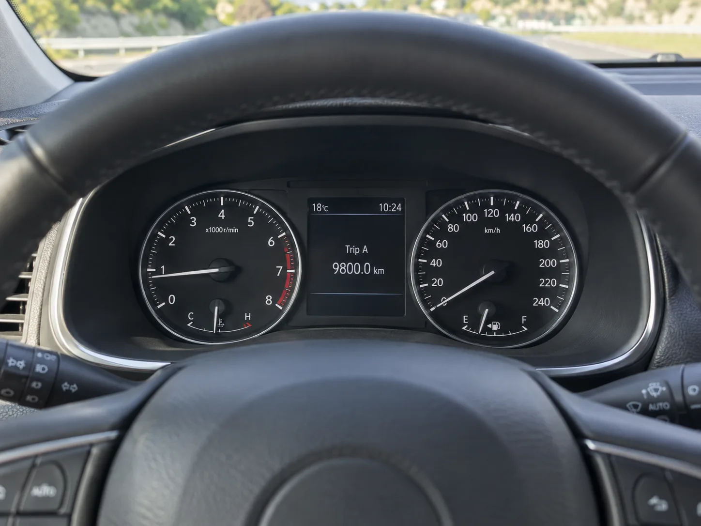
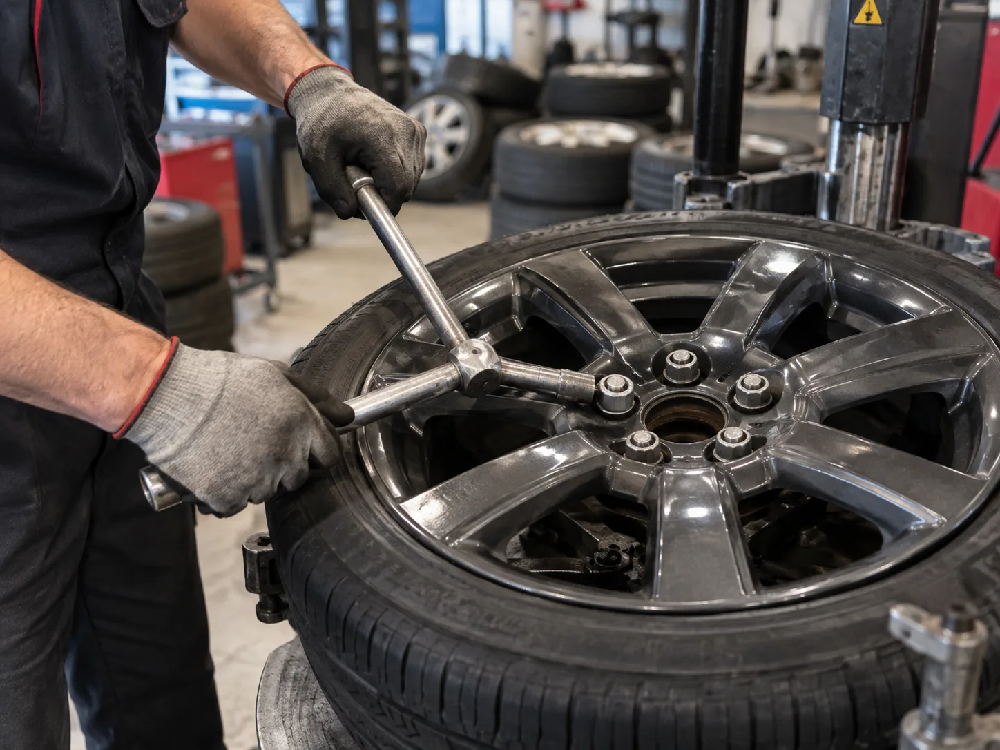
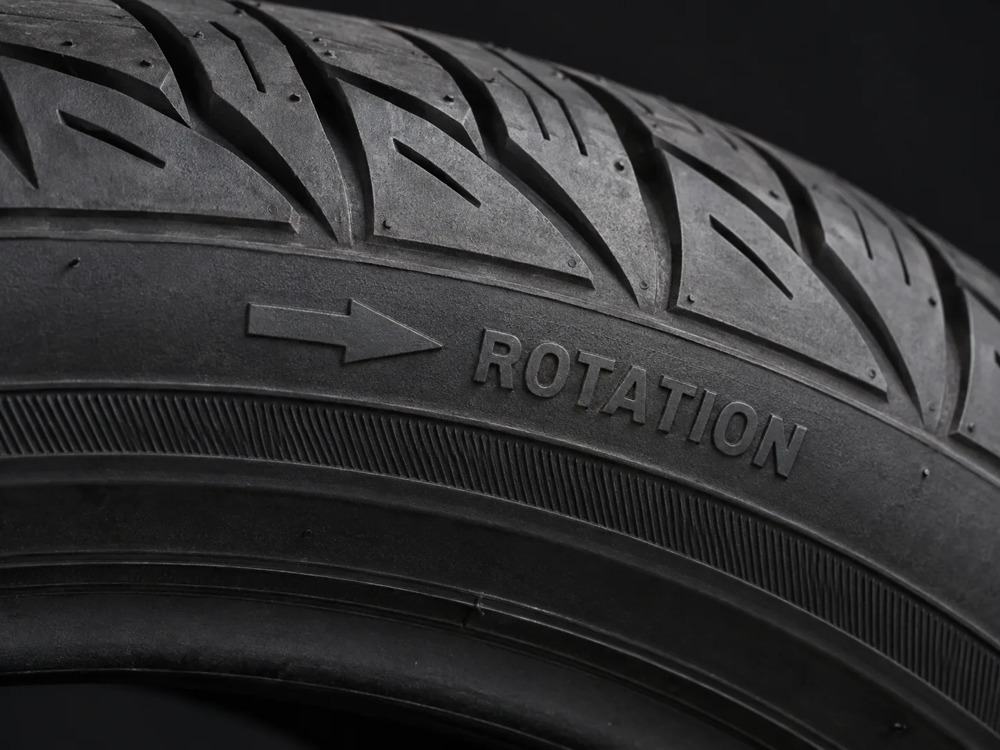

▲ 타이어는 장착 위치에 따라 마모 속도가 달라 주기적인 위치 교환이 필요하다 ⓒ CarPrism (AI 생성 이미지)
타이어 트레드가 아직 많이 남아 있어 보여도, 자리를 한 번도 바꾸지 않았다면 이야기가 다르다. 같은 날 같은 차에 장착된 네 짝이라도 앞과 뒤, 좌와 우가 받는 하중과 회전 방향이 달라 마모 속도는 제각각이다.
결과적으로 한쪽만 먼저 닳아 편마모가 시작되고, 전체 타이어를 온전히 다 쓰지 못한 채 조기 교체하는 경우가 많다. 정기적인 위치 교환(로테이션)이 필요한 이유다.
1. 왜 자리를 바꿔야 하나 — 편마모의 원리
타이어 마모는 위치마다 조건이 다르기 때문에 균일하게 진행되지 않는다. 조향과 구동을 함께 담당하는 앞바퀴(전륜구동 기준)는 코너링·제동 시 하중이 집중돼 뒷바퀴보다 훨씬 빨리 닳는다. 여기에 얼라인먼트가 조금만 틀어져도 안쪽 또는 바깥쪽만 파이는 편마모로 이어지기 쉽다.
📍 로테이션을 하지 않으면 생기는 일
한쪽 타이어만 먼저 닳으면 전체 4개를 다 쓰지 못하고 일부만 교체하게 되는데, 이 경우 새 타이어와 헌 타이어의 접지력 차이 때문에 제동 시 쏠림이나 미끄러짐 위험이 커질 수 있다. 반대로 로테이션을 꾸준히 하면 네 타이어의 마모가 평준화돼 같은 시점에 세트 교체가 가능해지고, 전체 수명도 늘어난다.
2. 권장 교환 주기 — 8,000~10,000km 또는 6개월
타이어 제조사들이 공통적으로 권장하는 주기는 주행거리 8,000~10,000km 또는 6개월이다. 엔진오일 교환 주기와 비슷하게 맞춰두면 정비소를 방문할 때마다 함께 점검받기 편하다.
| 기준 | 권장 주기 |
|---|---|
| 주행거리 기준 | 8,000~10,000km마다 (최대 15,000km는 넘기지 않는 것이 안전) |
| 기간 기준 | 약 6개월마다 1회 |
| 병행 정비 | 엔진오일 교환, 정기 점검 시점에 맞춰 함께 진행하면 효율적 |
| 이상 징후 발견 시 | 주기와 무관하게 편마모·소음·진동이 느껴지면 즉시 점검 |

▲ 트립 미터로 지난 로테이션 이후 주행거리를 확인하는 습관을 들이면 시점을 놓치지 않는다 ⓒ CarPrism (AI 생성 이미지)
차량 소유자 매뉴얼에는 제조사가 권장하는 정확한 로테이션 주기와 패턴이 명시돼 있다. 한국타이어 위치 교환 가이드 바로가기
3. 구동방식별 로테이션 패턴
어느 바퀴가 더 빨리 닳는지는 구동방식에 따라 달라지므로, 로테이션 패턴도 구동방식별로 다르게 적용해야 한다.
| 구동방식 | 이동 방법 | 이유 |
|---|---|---|
| 전륜구동(FF) | 뒷타이어 → 같은 쪽 앞으로 직진 이동 앞타이어 → 반대쪽 뒤로 교차 이동 | 조향·구동을 겸하는 앞바퀴 마모가 빨라 뒷타이어를 앞으로 보내 마모를 상쇄 |
| 후륜구동(FR) | 앞타이어 → 같은 쪽 뒤로 직진 이동 뒷타이어 → 반대쪽 앞으로 교차 이동 | 구동을 담당하는 뒷바퀴 마모가 빨라 전륜구동과 반대 방향으로 이동 |
| 사륜구동(AWD/4WD) | 앞뒤 타이어를 모두 대각선으로 교차 이동(X패턴) | 네 바퀴가 고르게 구동력을 나눠 받아 대각선 교차가 가장 균등한 마모를 유도 |
✅ 헷갈리지 않는 요령
· 전륜구동 — "뒤에서 앞으로는 그대로, 앞에서 뒤로는 엇갈려서"
· 후륜구동 — 전륜구동과 정반대로 적용
· 사륜구동 — 무조건 대각선(X자)으로 이동
· 확실하지 않다면 정비소에 맡기고 구동방식을 미리 알려주는 것이 가장 안전

▲ 십자렌치로 1차 체결한 뒤에는 반드시 토크렌치로 규정 토크를 맞춰야 주행 중 풀림을 막을 수 있다 ⓒ CarPrism (AI 생성 이미지)
4. 방향성 타이어는 다르다 — 좌우 교차 금지
모든 타이어를 앞의 패턴대로 자유롭게 옮길 수 있는 것은 아니다. 트레드 패턴이 한쪽 방향으로만 물을 배출하도록 설계된 방향성(directional) 타이어는 회전 방향이 정해져 있어 좌우를 바꿔 끼우면 안 된다.
📍 사이드월의 화살표를 먼저 확인하자
방향성 타이어의 옆면(사이드월)에는 회전 방향을 나타내는 화살표와 'ROTATION' 표기가 있다. 이 화살표가 가리키는 방향대로 장착돼야 빗길 배수 성능과 고속 주행 안정성이 설계값대로 나온다. 로테이션 시 같은 쪽(좌측 또는 우측)에서 앞뒤로만 이동해야 하며, 좌우를 바꾸려면 타이어를 휠에서 분리해 반대로 재장착(리마운트)하는 작업이 추가로 필요하다.

▲ 사이드월의 화살표와 'ROTATION' 표기는 방향성 타이어의 정회전 방향을 알려준다 ⓒ CarPrism (AI 생성 이미지)
✅ 방향성 vs 비방향성 구분법
· 방향성 타이어 — 트레드 패턴이 V자 또는 화살표 모양으로 한쪽 방향을 향함, 사이드월에 화살표·ROTATION 표기
· 비방향성(대칭/비대칭) 타이어 — 좌우 대칭 패턴, 별도의 회전 방향 표기 없음
· 비대칭 타이어는 안쪽(INSIDE)·바깥쪽(OUTSIDE) 표기만 있고 전후 로테이션은 자유로운 경우가 많으므로 표기를 함께 확인할 것
5. 로테이션과 함께 점검하면 좋은 것 — 얼라인먼트·밸런스
위치만 바꾼다고 편마모 원인이 사라지는 것은 아니다. 얼라인먼트가 틀어져 있으면 새로 옮긴 자리에서도 같은 방식으로 다시 닳기 시작한다.
| 항목 | 확인이 필요한 신호 |
|---|---|
| 휠얼라인먼트 | 한쪽으로 쏠리는 느낌, 트레드 안쪽·바깥쪽만 유독 빨리 닳는 편마모 |
| 휠밸런스 | 특정 속도 구간(주로 고속)에서 핸들이나 차체가 떨리는 진동 |
| 타이어 공기압 | 로테이션 후 위치가 바뀐 만큼 차종별 권장 공기압에 맞춰 재조정 |
📍 타이어 교체 시 필수는 아니지만, 증상이 있다면 필수
얼라인먼트·밸런스 점검이 로테이션이나 타이어 교체 때마다 반드시 필요한 것은 아니다. 다만 편마모나 쏠림, 진동 증상이 하나라도 나타난다면 로테이션 시점에 함께 점검받는 것이 효율적이다. 원인을 그대로 둔 채 위치만 바꾸면 같은 문제가 반복될 수 있다.
휠얼라인먼트·휠밸런스의 적정 점검 시기는 아래에서 자세히 확인할 수 있다. 미쉐린코리아 휠얼라인먼트 가이드 바로가기
6. 셀프로 가능할까 — 직접 할 때 주의할 점
공구만 있으면 로테이션 자체는 직접 할 수 있지만, 안전 여유가 크지 않은 작업이다. 잭 포인트를 정확히 확인하고 잭스탠드로 차체를 완전히 고정한 뒤에만 바퀴를 분리해야 한다.
⚠️ 셀프 작업 시 체크리스트
· 차량 매뉴얼에서 정확한 잭 포인트와 권장 로테이션 패턴을 먼저 확인
· 반드시 잭스탠드로 이중 고정 후 작업, 잭만으로 차체 아래 들어가지 않기
· 휠 너트는 대각선 순서(별 모양)로 풀고 조이기
· 재장착 시 차종별 규정 토크로 조이고, 주행 후 다시 한 번 토크 확인
· 자신이 없다면 정비소·타이어 전문점에 맡기는 것이 안전하고, 비용도 크지 않은 편
7. 요약
타이어는 장착 위치에 따라 마모 속도가 다르기 때문에, 8,000~10,000km 또는 6개월마다 위치를 바꿔주는 로테이션이 필요하다. 로테이션을 꾸준히 하면 네 타이어의 마모가 평준화돼 전체 수명이 늘고, 한꺼번에 세트 교체할 수 있어 관리도 편해진다.
패턴은 구동방식마다 다르다. 전륜구동은 뒤타이어를 그대로 앞으로, 앞타이어는 교차해 뒤로 보내고, 후륜구동은 그 반대다. 사륜구동은 대각선으로 교차 이동한다. 단, 방향성 타이어는 좌우를 바꾸지 말고 같은 쪽에서 앞뒤로만 옮겨야 한다.
편마모나 쏠림, 진동이 느껴진다면 로테이션만으로 끝내지 말고 휠얼라인먼트·휠밸런스도 함께 점검하자. 원인을 해결하지 않으면 위치를 바꿔도 같은 문제가 반복될 수 있다.